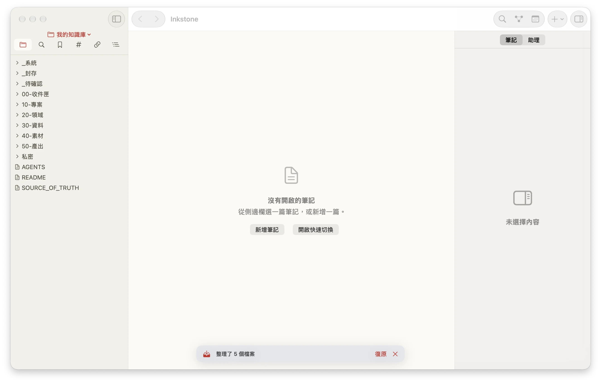
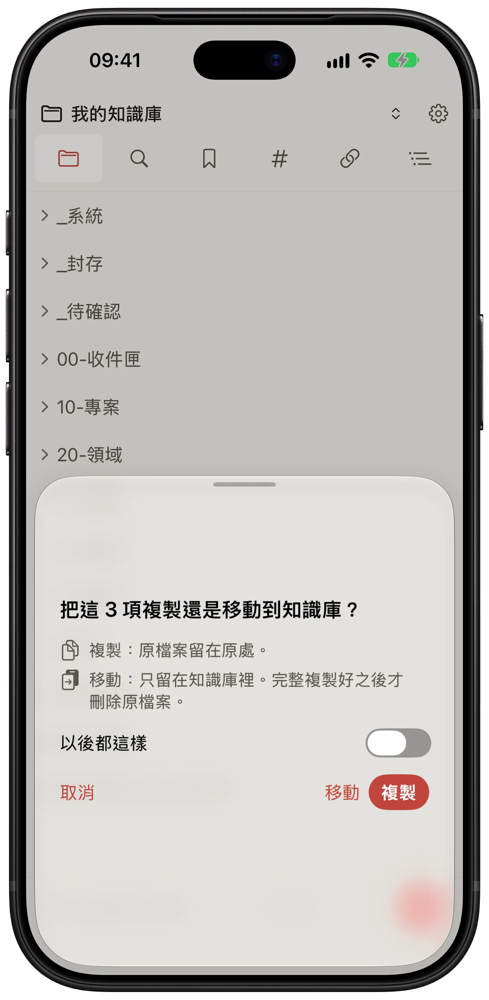

Inkstone › AI 知識庫
會自己整理的 AI 知識庫
把筆記、PDF、照片、錄音拖進一個資料夾。Inkstone 依你用白話寫的規則、藉助蘋果本機模型逐一歸檔，並讓任何 AI 助理都看得懂這個資料夾。

什麼是 AI 知識庫？
AI 知識庫就是你自己的筆記和檔案，整理得讓你和 AI 助理都找得到東西，並且用文字寫明東西放在哪、以哪個檔案為準。和普通筆記資料夾的差別就在後半句：AI 沒辦法開口問你發票放哪了。
Inkstone 讓它始終是一個普通資料夾，裡面是 Markdown 和原始檔案。沒有被鎖進資料庫，任何 App、任何 AI 智慧代理都能讀。
Inkstone 怎麼建
- 人和 AI 都好用的結構：收件匣、專案、領域、資料、素材、產出、私密，另有放拿不準檔案的「待確認」，和存放重複檔案的封存。
- 隱私優先：證件、銀行、醫療類先進私密資料夾。然後是你的規則，再看檔案提到的專案，素材依類型和月份。
- 剩下的交給本機模型。它讀檔案開頭，給出資料夾和標題建議；拿不準時，檔案留著等你決定。
- 一眼能掃的命名：20261119-裝修報價.md——先日期，後主題。
- 給 AI 的入口檔案：AGENTS.md、README.md、SOURCE_OF_TRUTH.md，資料夾一變就重寫。

放心交給它整理
不刪除任何東西。每一步移動都先寫日誌，整輪可以復原。筆記正文一個字都不改。檔案多或有重複時，等你點頭才動。
iPhone 和 iPad 上一樣
從「檔案」App 加入檔案，它們進收件匣，再依同樣的方式歸檔。知識庫放在 iCloud 雲碟，Mac 和 iPhone 看到的是同一個資料夾。

常見問題
AI 會讀我所有的檔案嗎？
本機模型只讀規則放不了的檔案的開頭，而且在你的裝置上讀。只有你填了自己的 key 並開啟，才會用雲端模型，傳送的是這個檔案的名稱和開頭、你的資料夾名稱和規則；看起來涉及隱私的檔案絕不傳送。
能和 Obsidian 一起用嗎？
Obsidian 資料庫依原樣開啟，永遠不會被重新整理。Inkstone 建的知識庫是一般 Markdown，Obsidian 也能開啟。
支援哪些裝置？
Mac（macOS 26）、iPhone 和 iPad（iOS 26）。本機模型需要支援 Apple Intelligence 的裝置；不支援時依你的規則整理。
要錢嗎？
不用。Mac 版和 App Store 版都免費，也不用註冊。